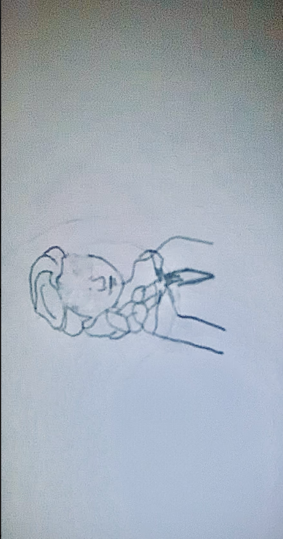

Name of Artwork: dunk it
Description: For this drawing, I was inspired by one of my favorite clothing brands. This originated from Nike, when they made a deal with one of the most known basketball players in the world: Michael Jordan. Although my artistic skills are not great, I made an attempt to find another way to calm me down

Name of art work: Blinded by the wind
Description: This is Elsa from Frozen, and the reason why I drew her with no eyes was to show the contradiction of how something that has power over you can end up hurting you. In the movie, her superpowers got too strong to the point that it almost got her killed. This drawing was made to show that your strongest emotions should not be able to be the reason why you were put at your worst
Name of art work: Dancing through the night
Description: The use of an everyday item can be helpful when making art because it can be seen as using someone else's garbage as your treasure.
Name of art work: Control
Description: There are times when anger takes control of a person, and their whole personality changes. The wolf represents the anger that is about to be unleashed by a person, while the birds represent hte peace leaving the person's body. Keep both, control one.